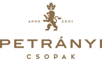

Hotel Golden Lake Resort **** Superior
Örömmel ajánljuk figyelmükbe Borsos Dominika fiatal harmonikaművészt, aki rendszeresen fellép
szállodánk Captain’s Bárjában.
Kivételes tehetsége és zenei érzékenysége minden alkalommal különleges hangulatot varázsol
vendégeink számára. Repertoárja nemzetközi – a francia sanzonoktól az olasz filmzenéken át a magyar
dallamokig – sokszínű és minden korosztály számára élvezetes.
Rádóczy Andrea
Igazgató Asszony
Hotel Golden Lake
Karolina kávéház és koktélbár
"Dominika kivételesen tehetséges zenész, nagyon szeretünk vele dolgozni, mindig kellemes hangulatot
varázsol a Karolina teraszra, ezért örömmel hívjunk az élőzenés brunchokra!"
Schindele Viktor
Karolina Kávéház és Koktélbár Balatonfüred
Petrányi Pince és Borterasz

Dining Guide TOP 100-as lista 37. Helyezett , valamint a Street Kitchen Guide Fesztivál 3.helyezett
Étterme.
Zenés Naplemente Koncertek, Sváb Ételek Harmonikaszóra,-Tematikus rendezvények.
Páratlan balatoni panoráma, kiváló borok, gourmet ételek, melyek tökéletes kiegészítése a hangulatos
élőzene.
Dominika a Petrányi borterasz állandó fellépője, amely egy nyári délután alkalmával vette kezdetét.
A harmonika betöltötte a borteraszt a kellemes nyári estén, és egy pillanatra elvarázsolt minket
Toszkána vidékeire. A változatos zenei kínálat tökéletesen passzolt a Pincészet elegáns, kifinomult
megjelenéséhez, páratlan élményt nyújtva kedves vendégeink számára.
A „Zenés Naplemente” koncertsorozat, heti rendszerességgel megrendezésre került, melynek
folytatásaként a Taste Balaton kiemelt rendezvényeként „Sváb Ételek Harmonikaszóra”, a speciális
sváb ételkülönlegességek mellett, polkák keringők hangzottak fel a Harmonikaművész előadásában.
Immáron a premium wine selection és a professzionális ízek mellett az egyedülálló Harmonikás élőzene
miatt is érdemes Csopakra látogatni.
Petrányi Piroska
Petrányi Pincészet